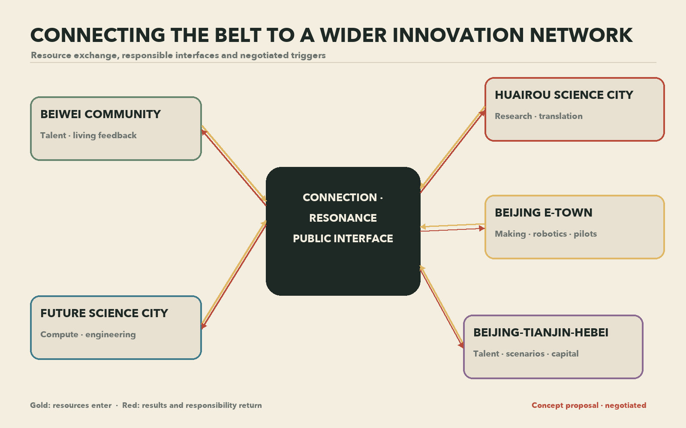

Centennial Jing-Zhang AI Innovation Belt Urban Design
Along the centennial Jing-Zhang corridor, history reaches the future, knowledge reaches daily life, and one person reaches another.
The mapped extent uses the repository's provisional rough boundary. It supports concept design and interim calculation; the package will update when official polygons arrive.
Full-stack innovation and global AI governance discourse
World-class AI innovation ecosystem
AI-native activity enters daily city life
Global resources, Zhongguancun identity and capital
AI scenarios and an intelligent vibrant city
Public service · human present · exit path
Controlled test · human review · pausable
Controlled test · human review · pausable
Public service · human present · exit path
Controlled test · human review · pausable
Public service · human present · exit path
Public service · human present · exit path
Public service · human present · exit path
Public service · human present · exit path
Public service · human present · exit path
Public service · human present · exit path
Public service · human present · exit path
The figures are recalculated from one GeoJSON set in EPSG:4548 and retain low confidence with the provisional boundary. Regulatory, ownership, existing-building, municipal and heritage conditions remain pending.
Synthetic sound for concept communication; no historic recording is used.
Railway memory, station story and cultural walk
Six city rooms, twelve scenarios and Xiaoyuehe Wing
Six-resource cycle, key areas and Technology Service Wing
Name, two-lines-one-arc logo direction, positioning, functions and spatial structure
Eight cases, six resources, Zhongzhiyuan and Origin
12 scenarios, 3 validations, 6 personas and human review
3 landmarks, credit plaques and 6 components
Railway, Zhongguancun and new AI culture; bilingual wayfinding
Connection Season, developer community, open scenarios and conversion

Beiwei exchanges young talent and living feedback; Future Science City exchanges compute and engineering platforms; Huairou exchanges research questions and translation; E-Town links manufacturing and pilots; Beijing-Tianjin-Hebei shares annual open questions. Every relationship is proposed for negotiation.
Brick-red connection, gold resonance and echo arcs.
Opt-in name or anonymous code, with withdrawal.
Spring Find the Way, Summer Share the Table, Autumn Try the Path, Winter Echo.